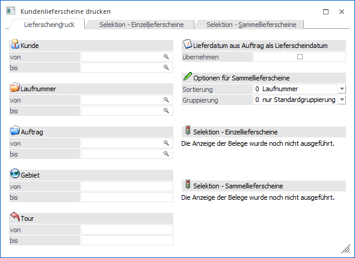
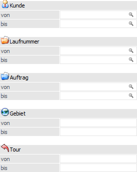
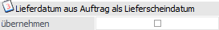
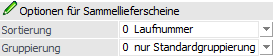
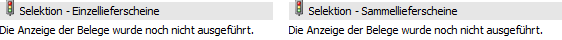

In dem Register "Lieferscheindruck" können Selektionen und Einstellungen für den Druck der Lieferscheine vorgenommen werden. Die getätigten Eingaben wirken sich direkt auf die Register "Selektion - Einzellieferscheine" und "Selektion - Sammellieferscheine" aus.

Selektion

Ø Kunde von / bis
An dieser Stelle kann auf die Kundennummer eingeschränkt werden.
Hinweis
Ob es sich bei der Nummer um jene des Rechnungsempfängers oder der Lieferadresse handelt, ist abhängig von der Einstellung "Hauptkonto für Belege" (WinLine START - Parameter - FAKT-Parameter - Belege - Allgemein - Option "Hauptkonto für Belege").
Ø Laufnummer
Hier kann auf die Laufnummern der Aufträge selektiert werden, für welche Lieferscheine erzeugt werden sollen.
Ø Auftrag von / bis
An dieser Stelle kann eine Einschränkung auf die Auftragsnummern erfolgen.
Ø Gebiet von / bis
Hier kann auf das Gebiet eingeschränkt werden.
Ø Tour von / bis
In diesen Feldern kann auf die Tour eingeschränkt werden, welche bei dem Lieferscheindruck berücksichtigt werden soll.
Lieferdatum aus Auftrag als Lieferscheindatum

Ø Lieferdatum aus Auftrag als Lieferscheindatum übernehmen
Durch Aktivierung dieser Option wird das Lieferscheindatum mit dem Lieferdatum aus dem Auftrag vorbelegt. Hierbei ist das Datum der ersten Artikelzeile aus dem Beleg ausschlaggebend (unabhängig davon, ob dieser Artikel geliefert wird).
Hinweis
Wird die Option nicht aktiviert und in den Registern der Selektion kein abweichendes Lieferscheindatum hinterlegt, dann wird automatisch das aktuelle Tagesdatum (Datum des Einlogvorgangs) als Belegdatum verwendet. Des Weiteren wird die Option benutzerspezifisch gespeichert.
Optionen für Sammellieferscheine

An dieser Stelle kann die Sortierung und Gruppierung für Sammellieferscheine definiert werden. Hierbei ist zu beachten, dass die Aufträge zunächst immer anhand des Hauptkontos zusammengefasst werden. Innerhalb des Kontos werden dann einzelne Sammellieferscheine pro Lieferadresse, Fremdwährung, Brutto-/Netto-Kennzeichen der Preisliste und Summenrabatt gebildet. Es handelt sich hierbei um die sogenannte "Standardgruppierung".
Hinweis
Die folgenden Optionen werden benutzerspezifisch gespeichert.
Ø Sortierung
Mit Hilfe der Auswahlliste "Sortierung" kann definiert werden, in welcher Reihenfolge die Aufträge für die Sammellieferscheinerzeugung sortiert werden sollen. Die Sortierung findet dabei immer nach der Standardgruppierung (siehe oben) statt. Folgende Möglichkeiten stehen zur Verfügung:
ü 0 - Laufnummer
ü 1 - Auftragsnummer
ü 2 - Auftragsdatum
ü 3 - Projektnummer
Ø Gruppierung
Innerhalb der Belegerfassung besteht die Möglichkeit ein Gruppierungskennzeichen pro Beleg zu hinterlegen (Register "Zusatz" - Feld "Gruppierung (SLS/SFA)"). Ob bzw. wie sich dieses Kennzeichen bei der Erstellung der Sammellieferscheine auswirkt, kann mit Hilfe der Option "Gruppierung" definiert werden.
ü 0 - nur Standardgruppierung
verwenden
Es werden (innerhalb der Hauptkontonummer) die Belege nach der
Standardgruppierung (Lieferadresse, Fremdwährung, Brutto-/Netto-Kennzeichen der
Preisliste und Summenrabatt) zusammengefasst. Innerhalb der Standardgruppierung
erfolgt die Sortierung gemäß der Option "Sortierung". Das
Gruppierungskennzeichen der Belege wird nicht berücksichtigt.
ü 1 - Kennzeichen vor
Standardgruppierung berücksichtigen
Es werden (innerhalb der
Hauptkontonummer) die Belege nach dem manuell zu vergebenen
Gruppierungskennzeichen gruppiert. Anschließend erfolgt die Zusammenfassung auf
Grundlage der Standardgruppierung (Lieferadresse, Fremdwährung,
Brutto-/Netto-Kennzeichen der Preisliste und Summenrabatt). Innerhalb der
Standardgruppierung wird die Sortierung gemäß der Option "Sortierung"
vorgenommen.
ü 2 - Kennzeichen nach Sortierung
berücksichtigen
Es werden (innerhalb der Hauptkontonummer) die Belege nach
der Standardgruppierung (Lieferadresse, Fremdwährung, Brutto-/Netto-Kennzeichen
der Preisliste und Summenrabatt) zusammengefasst. Innerhalb der
Standardgruppierung erfolgt die Sortierung gemäß der Option "Sortierung".
Abschließend wird auf Grundlage des Gruppierungskennzeichens der Belege eine
weitere Gruppierung durchgeführt.
Beispiel
Es sind 4 Aufträge für den Kunden "230A001" vorhanden und es wird die Sortierung "3 - Projektnummer" verwendet (alle Standardgruppierungselemente sind identisch):
ü Auftrag "AB1" - Projektnummer "P100" - Gruppierungskennzeichen "K1"
ü Auftrag "AB2" - Projektnummer "P101" - Gruppierungskennzeichen "K1"
ü Auftrag "AB3" - Projektnummer "P100" - Gruppierungskennzeichen "K2"
ü Auftrag "AB4" - Projektnummer "P101" - Gruppierungskennzeichen "K2"
Je nach Gruppierungsoption werden die folgenden Sammellieferscheine erstellt:
ü Option "0 - nur
Standardgruppierung verwenden"
Es wird nur ein Sammellieferschein erstellt,
da das Gruppierungskennzeichen nicht berücksichtigt wird. Innerhalb des
Sammellieferscheins wird nach der Projektnummer sortiert.
ü Option "1 - Kennzeichen vor
Standardgruppierung berücksichtigen"
Es werden zwei Sammellieferscheine
erstellt. Der eine Lieferschein beinhaltet die Aufträge mit dem
Gruppierungskennzeichen "K1" und der zweite die Aufträge mit dem Kennzeichen
"K2". Innerhalb beider Belege wird wiederum nach der Projektnummer sortiert.
ü Option "2 - Kennzeichen nach
Sortierung berücksichtigen"
Es werden vier Sammellieferscheine erstellt. Es
wird zunächst nach der Projektnummer sortiert und dann pro
Gruppierungskennzeichen ein Sammellieferschein erstellt, da die Reihenfolge der
Kennzeichen "K1, "K2", "K1" und "K2" lautet.
Info

Ø Selektion - Einzellieferscheine / Selektion - Sammellieferscheine
An dieser Stelle wird ausgewiesen, ob bereits in die Register der manuellen Selektion gewechselt wurde und wenn ja, wie viele Belege für den Druck selektiert wurden.